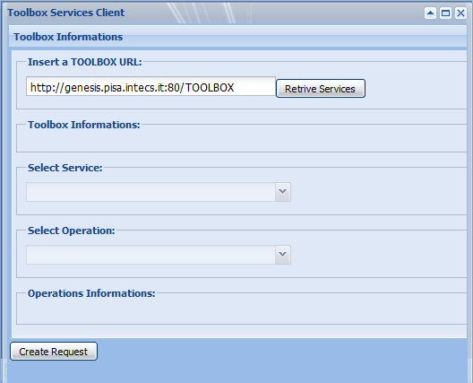
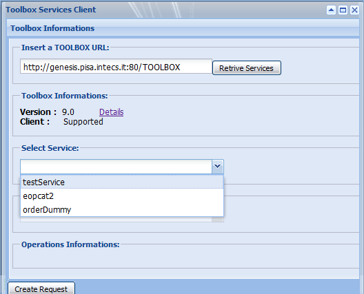
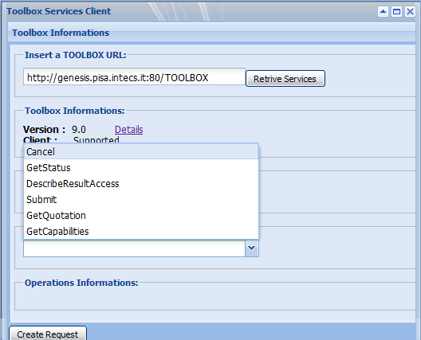
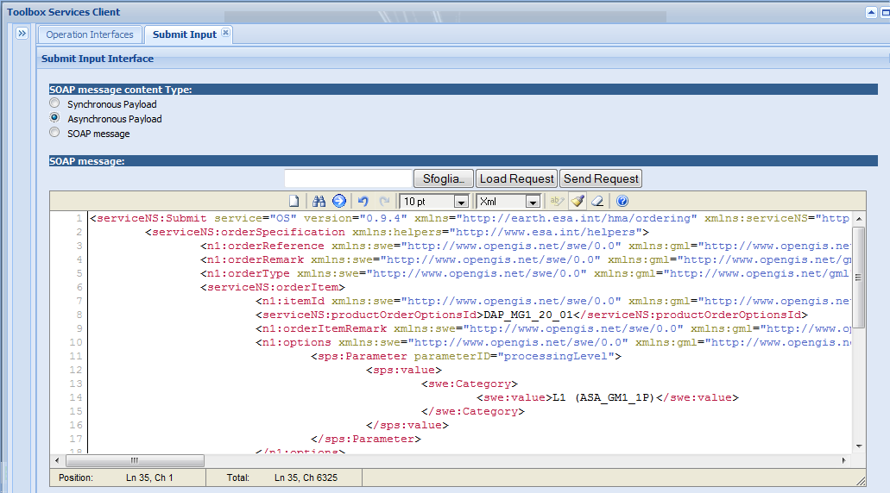
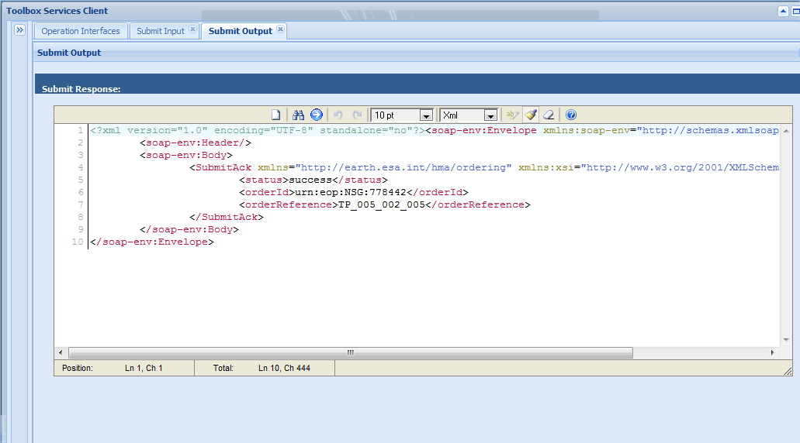

Open the "Toolbox Application Cient" and click on the following link to open the Toolbox Service Client
Insert the Toolbox URL (it should already be filled if the Toolbox has been correctly installed). Click on Retrieve Services

The client connects to the toolbox and retrieve the list of the available services. Select the service you want to test

The client retrieves the list of the operations available for the selected service

Select the operation you want to test and click on Create Request. A new interface is displayed.

In this step you have to provide the test message and to select one of the available SOAP MEssage Content type:
- Synchronous Payload: this option have to be selected if the operation you are testing is synchronous.
- Asynchronous Payload: this option have to be selected if the operation you are testing is asynchronous and the message you are going to provide is the content of the SOAP Body (WS-Addressing informatio will be added by the Client).
- SOAP message: this option have to be selected if the operation you are testing is asynchronous and the message you are going to provide is the complete SOAP message (including the WS-Addressing information).
Select the content type, load the request from disk or paste it directly on the text area, then click on Send request

The message is sent and the response is displayed in a new tab page for investigation.
 See the Push Server page to know how to use the push server to test asynchronous operations.
See the Push Server page to know how to use the push server to test asynchronous operations.